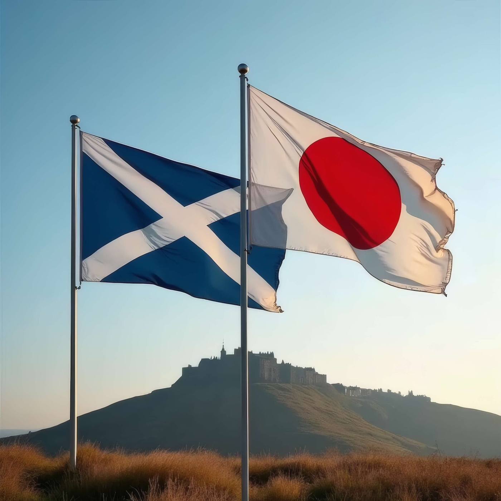

スコットランド・ニュース - Japanese Edition of Scottish News

20260927 配信
Your browser does not support the audio element.
1. 北アイルランドでオレンジ教団のパレードを巡り緊張が高まっています。⚡⚡
Orange Lodge members refused permission to march as stand-off continues
https://www.thenational.scot/news/26585618.orange-lodge-members-refused-permission-march-psni/?ref=rss
2. グラスゴー市議会が検討した解雇して再雇用する手法に批判が集まっています。⚡
'Largest fire and rehire in history': Marra urges Labour to condemn Glasgow Council
https://www.heraldscotland.com/news/26585396.marra-urges-labour-condemn-glasgow-fire-and-rehire-bid/?ref=rss
3. 最新の世論調査で労働党が議席を増やす予測が示されました。⚡
New 'megapoll' predicts result of every Scottish seat as Labour close in on SNP
https://www.thenational.scot/news/26585336.new-westminster-poll-predicts-result-every-scottish-seat/?ref=rss
4. パレスチナ支持デモで参加者が逮捕されました。⚡
Arrests during pro-Palestine Action protest outside Labour conference
https://www.thenational.scot/news/26585236.two-arrested-palestine-action-protest-outside-labour-conference/?ref=rss
5. スコットランドで車同士が衝突し四人が病院へ搬送されました⚡
Four people taken to hospital after crash on A1 in East Lothian
https://www.thenational.scot/news/26585225.four-people-taken-hospital-crash-a1/?ref=rss
6. スコットランドのグラスゴーで薬物とアルコール中毒の犠牲者を追悼する式典が開かれました。
Man who tragically lost wife and daughter to addiction leads remembrance ceremony in Glasgow
https://news.stv.tv/west-central/man-who-tragically-lost-wife-and-daughter-to-addiction-leads-remembrance-ceremony-in-glasgow
📄 エピソードテキストを見る